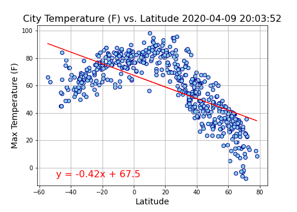

Summary: Latitude vs. X

The purpose of this project was to analyze how weather changes as you get closer to the equater. To accomplish this analysis. we first pulled data from the OpenWeatherMapAPI to assemble a dataset on over 500 cities.
After assembling the dataset, we used Matplotlib to plot various aspects of the weather vs. latitude. Factors we looked at included: temperature, cloudiness, windspeed, and humidity. This site provides the source data and visualizations created as part of the analysis,as well as explanations and descriptions of any trends and correlations witnessed.
The data was analyzed by looking at the parameters of Northern and Southern hemisheres separetly in order to find linear relationships between the latitude and depending variables (temperature, humidity, cloudiness and winds). As demonstrated by this Temperature plot with clear maximum near the Equator, no linear correlations are expected by analyzing variables by the full range of latitudes.